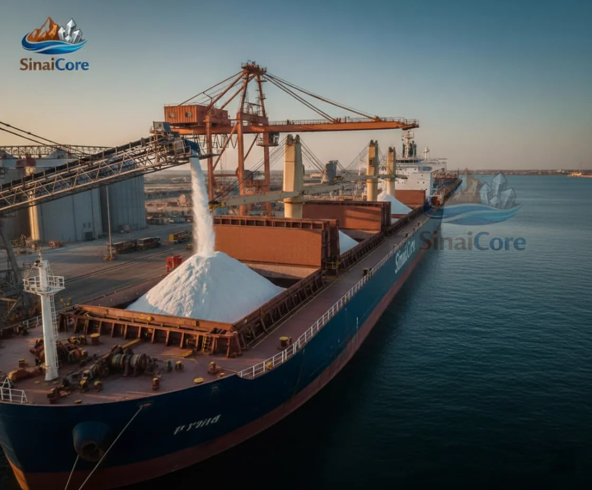

A scroll-driven 3D story about one export salt bag — how it is sourced, protected, assembled, and shipped across the sea. Scroll down and watch the bag rotate, open, and reveal what is inside.
◈ 3D Scroll Animation5 Numbered ChaptersExploded ViewDesktop-First
On the Mediterranean coast of North Sinai, seawater is invited to do the work. Shallow evaporation fields turn sun and wind into crystals — a process older than any factory, refined by SinaiCore into an export-grade product. What you see in the 3D model beside this text is the final form of that journey: a single bag, engineered to survive a sea voyage.[1]
≥ 0%NaCl Purity (Refined)
0%Solar Evaporation
0Product Lines
Field Note — Why North Sinai?The region's climate and coastline make it a natural home for marine salt production — and SinaiCore coordinates supply exclusively from qualified producers there, so every batch starts with a known source.[2]
SinaiCore does not simply sell salt. It coordinates the entire chain — sourcing, testing, packaging, documentation, and shipping — so an industrial buyer anywhere in the world receives a product that matches its specification, batch after batch.
02
Chapter Two · The Challenge
Purity Is Only Half the Story
A salt crystal can be chemically perfect in the field and still fail at sea. Humidity, contamination, inconsistent particle size, and missing paperwork are the quiet enemies of every bulk shipment. The challenge, therefore, is not only to make salt — it is to protect it, prove it, and move it.[3]
💧 Moisture & Caking
Strict humidity control keeps the product stable during storage and maritime transport — down to ≤ 0.2% moisture for refined grades.
📏 Particle Size
Granulometry and sieve analysis match each grade to its application: industrial, water treatment, or road de-icing.
🧪 Proof of Quality
Batch testing with independent third-party laboratory verification — a Certificate of Analysis (COA) and TDS for every shipment on request.
“From extraction to final export loading, every batch is monitored — because trust is built at the source, not at the port.”
Watch the model: the badges around the bag are the three promises SinaiCore makes on every order — dry, consistent, and verified.
03
Chapter Three · Internal Components
Anatomy of an Export Bag — Exploded View
Scroll here and the bag comes apart. Four layers separate in space so you can see what stands between the sea and the ship. This is the exploded view — the same way engineers study a machine, applied to a bag of salt.[4]
Layer by Layer
Salt Core (Layer 02) — the product itself: solar-evaporated marine salt, washed, screened, and graded to specification.
PE Liner (Layer 03) — a moisture barrier that protects the core during storage and maritime transport.
Woven PP Shell (Layer 04) — heavy-duty polypropylene fabric that carries the load, printed with the SinaiCore identity.
Stitching & Label — the sealed top and the batch label that make every bag traceable from source to shipment.
Margin Note — TraceabilityEach production batch is tracked from the qualified supplier source through processing, packaging, and documentation, to vessel or container loading. If a customer asks “which batch is this?”, the answer is never a guess.
Drag the exploded bag to inspect it from any angle. When you are ready, keep scrolling — the layers will come back together.
04
Chapter Four · External Design
Formats for Every Market
Not every buyer wants the same bag. SinaiCore's packaging programme covers the full range — from retail-ready 25 kg bags to bulk vessel loading — each format engineered for its own logistics chain.[5]
Packaging Gallery
25 kg / 50 kg BagsHeavy-duty PP/PE export-grade bags for containerized shipments.
Jumbo Bags (FIBC) – 1MT to 1.5MTReinforced lifting loops and bottom discharge spouts.

Bulk Vessel LoadingHigh-volume orders, subject to port and vessel arrangements.
Bulk & Sling BagsCharter vessel loading using sling bags, tailored per customer.
Before / After — Raw vs. Refined
Drag the handle to compare natural marine salt with the refined grade. The difference is not only visual: refining lifts NaCl purity to ≥ 99.5% and moisture down to ≤ 0.2%.
Before · RawAfter · Refined ≥ 99.5%
↔ Drag left / right to compare
Product Specifications at a Glance
Product
NaCl
Moisture
Main Use
Premium Refined Salt
≥ 99.5%
≤ 0.2%
Industrial / Food
Industrial Washed Salt
≥ 98.5%
≤ 3%
Industrial
Winter Maintenance
≥ 98.0%
—
Road de-icing
Water Treatment Tablets
≥ 99.5%
—
Water softening
Marine Salt
≥ 97.0%
≤ 4%
Industrial / Commercial
Editor's NoteThe 3D model shows the bag; the gallery and comparison show what the bag cannot — texture, colour, and scale. Together they complete the picture.
05
Chapter Five · Final Result
Sealed, Documented, Ready for the World
The story ends where it should: at the port. Bags are sealed, batches are documented, and shipments leave Egypt under clear Incoterms — FOB Arish Port for bulk and charter vessels, or FOB Suez / Port Said East for containerized cargo.[6]
✓ Quality verified — COA & TDS available on request
✓ Fully traceable batches, source to shipment
✓ Flexible Incoterms per the latest ICC rules
✓ Samples provided with full Certificate of Analysis
01Source North Sinai
02Processing Wash · Grade
03Packaging Bag · FIBC · Bulk
04Port FOB Arish / Suez
05World Your Market
Start your own shipment
Share your specifications and quantities — our team will respond with a quotation and samples.
SinaiCore coordinates supply from qualified marine salt producers in North Sinai; products are selected, processed, tested, and documented per customer requirements.
Quality procedures align with ISO compliant procedures and, where applicable, BS / ASTM / EN standards.
Packaging: 25 kg / 50 kg PP/PE bags, Jumbo Bags (FIBC) 1–1.5 MT, sling bags, and bulk vessel loading.
Shipping terms: FOB Arish Port (bulk/charter) · FOB Suez Port or Port Said East Al-Tafreaa (containerized 20ft & 40ft). Incoterms per latest ICC rules.
Contact: info@sinaicore.com · +20 110 753 9914 · El Arish & New Cairo, Egypt.